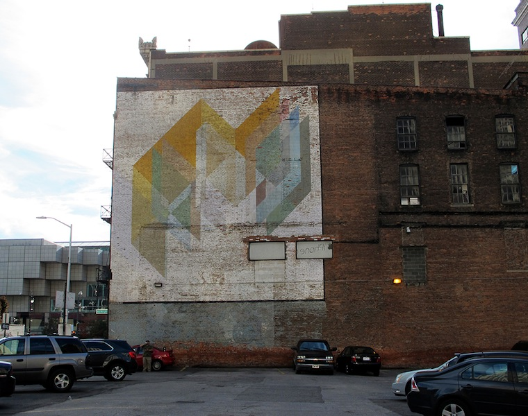

Rubello meets his friend Charles McGee at Arts & Crafts when he is 15 and McGee is 31. The Detroit artist and 2008 Kresge eminent artist , born 1919, co-directs New Detroit Inc.'s Living With Art Program in the early 1970s. His lost, 20' x 25' mural, painted on the side of a hair salon at Wyoming and Curtis in 1972, is the first work created under the auspices of  Living With Art.6
His untitled downtown geometric mural (commissioned by New Detroit, Inc. in 1974 for an international energy conference), though compromised and fading, remains.
See ARTS AND CRAFTS , LIVING WITH ART and MURALS .